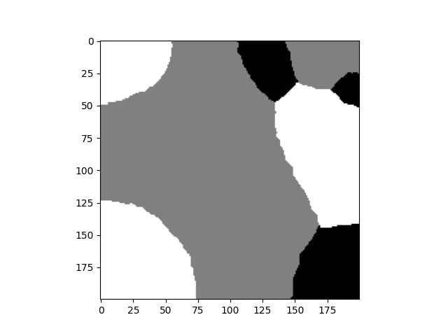

Du C++ depuis JAX
FinistR : bootcamp à Roscoff
Objectifs
Dans ce tutoriel, qui constitue le suite de Du C++ depuis Python, nous étudions le module jax.extend.ffi dont un tutoriel est donné ici. Plus précisément, nous allons adapter ce dernier pour l’utilisation d’un algorithme naïf d’échantillonneur de Gibbs écrit en C++ depuis JAX.
Le projet
Tous les fichiers du projet sont disponibles sur ce dépôt Github. Les outils et l’arborescence sont similaires au tutoriel C++ depuis Python.
Code C++
Nous avons à disposition une mini bibliothèque C++ implémentant une version naïve de l’échantillonneur de Gibbs. Les trois fonctions qu’elle offre sont disponibles dans lib/gibbs_sampler.h :
void initialize(int* image, int rows, int cols, int Q);
void printImage(int* image, int rows, int cols);
void RunGibbsSampler(int* image, int rows, int cols, int Q, float beta, int iter);Le fichier gibbs_sampler_cpp.cpp chronomètre cette implémentation de l’échantillonneur de Gibbs pour \(1000\) itérations, sur une image de \(200\times200\), pour un modèle de Potts à \(3\) classes où \(\beta=1.0\) :
// Thanks chatgpt for the quick gibbs sampler implementation
#include <iostream>
#include <cmath>
#include <cstdlib>
#include <ctime>
#include <chrono>
#include "lib/gibbs_sampler.h"
using namespace std;
using namespace std::chrono; // Use the chrono namespace
// Main function
int main() {
int rows = 200;
int cols = 200;
int Q = 3; // Number of possible labels (states)
float beta = 1.0; // Coupling strength
int iter = 1000;
// Allocate memory for the image
int* image = new int[rows * cols];
auto start = high_resolution_clock::now();
// Initialize the image with random states
initialize(image, rows, cols, Q);
// cout << "Initial image:" << endl;
// printImage(image, rows, cols);
RunGibbsSampler(image, rows, cols, Q, beta, iter);
auto stop = high_resolution_clock::now();
auto duration = duration_cast<milliseconds>(stop - start);
cout << "Execution time: " << duration.count() << " milliseconds" << endl;
// cout << "Final image after Gibbs sampling:" << endl;
// printImage(image, rows, cols);
// Free allocated memory
delete[] image;
return 0;
}Le fichier ci-dessus est compilé et exécuté avec la commande :
bazel build main && bazel-bin/mainL’instruction build main se trouve dans BUILD.bazel (il s’agit d’une simple compilation d’exécutable cc_binary) :
cc_binary( # no header here, we are not building a library
name = "main",
srcs = ["gibbs_sampler_cpp.cpp"],
visibility = ["//visibility:public"],
deps = ["//lib:gibbs_sampler_lib"]
)Mais on remarque que cette règle de compilation dépend d’une autre règle de compilation qui est celle de la bibliothèque de l’échantillonneur de Gibbs gibbs_sampler_lib. Cette règle, exécutée automatiquement par dépendance, se situe dans lib/BUILD.bazel :
cc_library(
name = "gibbs_sampler_lib",
srcs = ["gibbs_sampler.cpp"],
hdrs = [
"gibbs_sampler.h", # These headers are intended to be included by other libraries or binaries that depend on this library.
],
copts = ["-std=c++17"],
visibility = ["//visibility:public"],
)Finalement, l’exécution du programme donne :
Execution time: 3718 millisecondsRetenons cette valeur à laquelle nous allons nous comparer plus tard. Retenons également l’illustration (voir le dépôt git pour le code C++ incluant la sauvegarde de l’image) :
gibbs_sampler_cpp.cppC++ depuis JAX
Wrapping dans XLA
Comme indiqué dans les deux seuls tuto sur le sujet actuellement disponibles (sur la doc de JAX et sur la doc XLA), il va nous falloir wrapper les fonctions de notre bibliothèque dans l’API des custom call de XLA.
Nous commençons par télécharger l’API en trois fichiers, api.h, c_api.h et ffi.h, que nous plaçons dans lib/xla/ffi/api/. Nous créons ensuite une fonction GibbsSamplerImpl qui va envelopper initialize et RunGibbsSampler disponibles dans gibbs_sampler.h. Ce wrapping s’effectue à l’aide d’objets particuliers : Buffer (représentant les jax.numpy arrays), Datatype, Error, Bind et Attr. Ces objets sont à l’intermédiaire des structures de données de jax.numpy et de C++. Leur utilisation est décrite dans les tuto cités plus hauts. On note de manière intéressante que GibbsSamplerImpl ne prend pas de tableau (jnp.array) en entrée, i.e., pas de Bind.Arg<>() ; les seuls arguments d’entrée sont des attributs nommés, i.e., Bind().Attr<>(). Il y aura cependant un retour qui sera le tableau du résultat de l’échantillonneur, i.e., Bind().Ret<>(). Finalement, la vraie fonction d’intérêt qui pourra être utilisable via le module jax.extend est construite par la macro XLA_FFI_DEFINE_HANDLER_SYMBOL et s’appelera GibbsSampler.
Toutes ces opérations sont écrites dans lib/gibbs_sampler_xla.cpp :
#include <cmath>
#include <cstdint>
#include <numeric>
#include <type_traits>
#include <utility>
#include <functional>
#include "xla/ffi/api/c_api.h"
#include "xla/ffi/api/ffi.h"
extern void initialize(int* image, int rows, int cols, int Q);
extern void RunGibbsSampler(int* image, int rows, int cols, int Q, float beta, int iter);
namespace ffi = xla::ffi;
ffi::Error GibbsSamplerImpl(
//ffi::BufferR1<ffi::DataType::S32> in_img,
ffi::Result<ffi::BufferR2<ffi::DataType::S32>> img,
int rows,
int cols,
int Q,
float beta,
int iter
) {
initialize(img->typed_data(), rows, cols, Q);
RunGibbsSampler(img->typed_data(), rows, cols, Q, beta, iter);
return ffi::Error::Success();
}
XLA_FFI_DEFINE_HANDLER_SYMBOL(
GibbsSampler, GibbsSamplerImpl,
ffi::Ffi::Bind()
// .Arg<ffi::BufferR1<ffi::DataType::S32>>()
.Ret<ffi::BufferR2<ffi::DataType::S32>>()
.Attr<int>("rows")
.Attr<int>("cols")
.Attr<int>("Q")
.Attr<float>("beta")
.Attr<int>("iter")
);Afin d’alléger le code, le wrapping de la bibliothèque gibbs_sampler.h à l’aide de l’API XLA, constitue une bibliothèque intermédiaire dont le header est gibbs_sampler_xla.h. On la compile avec la règle gibbs_sampler_xla_lib définie dans lib/BUILD.bazel :
cc_library(
name = "gibbs_sampler_xla_lib",
srcs = [
"xla/ffi/api/c_api.h",
"xla/ffi/api/ffi.h",
"xla/ffi/api/api.h",
"gibbs_sampler_xla.cpp",
], # When deciding whether to put a header into hdrs or srcs, you should ask whether you want consumers of this library to be able to directly include it
hdrs = [
"gibbs_sampler_xla.h",
],
includes = [ # need to use include -I option is not available due to sandbox stuff
".", # adding to srcs or hdrs does not include
],
copts = ["-std=c++17 -rdynamic"], # -rdynamic to use extern
deps = ["//lib:gibbs_sampler_lib"],
visibility = ["//visibility:public"],
)On note que cette règle nécessite l’exécution de la règle gibbs_sampler_lib.
Création du module Python
Comme dans le tuto C++ depuis Python nous allons utiliser pybind et les PyCapsule pour cette partie des opérations. Nous créons alors un module python appelé gibbs_sampler contiendra une fonction elle-même appelée gibbs_sampler. L’appel de cette dernière retournera une PyCapsule contenant la fonction GibbsSampler définie à la fin de la section précédente. Le code effectuant tout cela est dans lib/gibbs_sampler_xla_pybind.cc.
#include <pybind11/pybind11.h>
#include "gibbs_sampler_xla.h"
template <typename T>
pybind11::capsule EncapsulateFunction(T* fn) {
return pybind11::capsule(reinterpret_cast<void*>(fn));
}
PYBIND11_MODULE(gibbs_sampler, m) { // please match the pybind_extension target name
m.def("gibbs_sampler", []() { return EncapsulateFunction(GibbsSampler); });
}Le code se compile en un module python avec la règle gibbs_sampler définie dans lib/BUILD.bazel :
pybind_extension( # must be in two steps (first cc_library then pybind_extension)
name = "gibbs_sampler", # must match the pybind module name
srcs = ["gibbs_sampler_xla_pybind.cc"],
deps = ["//lib:gibbs_sampler_xla_lib"],
copts = ["-std=c++17 -rdynamic"]
)On note la dépendance sur la règle gibbs_sampler_xla_lib.
Finalement le module Python peut se compiler avec la simple commande
bazel build //lib:gibbs_samplerUtilisation du module Python avec jax.extend.ffi
Nous sommes enfin en mesure d’utiliser la fonction C++ depuis JAX !
Dans le fichier gibbs_sampler_c_from_JAX.py :
- Nous enregistrons notre appel FFI (nom, PyCapsule, platform) :
jex.ffi.register_ffi_target("gibbs_sampler", gibbs_sampler_lib.gibbs_sampler(), platform="cpu")Nous définissons une fonction Python
gibbs_sampler_cppqui effectue l’appel àGibbsSampler, la fonction cachée dans la PyCapsule, à l’aide dejax.ffi.ffi_call. On note que cet appel est maintenant plutôt simple. Il faut préciser les dimensions et le type du résultat retourné avec un objectjax.ShapeDtypeStruct, il ne nous faut pas préciser d’argument en entrée car nous n’avons que des attributs qui sont passés en keyword argument.Nous instruisons l’appel avec les mêmes paramètres qu’auparavant et le chronométrons :
rows = 200
cols = 200
Q = 3
beta = 1
n_iter = 1000
start = time.time()
res = gibbs_sampler_cpp(rows, cols, Q, beta, n_iter)
end = time.time()
print(f"Time: {end - start} seconds")L’exécution de ce script Python donne :
Time: 3.9689433574676514 secondsCe qui est un temps très légèrement supérieur à l’appel directement depuis C++ à la même fonction avec les mêmes paramètres. Nous obtenons donc le résultat espéré et terme de temps, ainsi qu’en illustration :

gibbs_sampler_c_from_JAX.pyComparaison avec Python / JAX
La bibliothèque JAX de Python offre la fonctionnalité clé de compilation à la volée (Just In Time compilation) qui permet une compilation du code Python à la première exécution pour des exécutions ultérieures bien plus rapides, en général.
Sur CPU
La bibliothèque mrfx offre une implémentation en pur JAX de l’échantillonneur de Gibbs et de l’échantillonneur de Gibbs chromatique. Nous pouvons obtenir un chronométrage de l’échantillonneur de Gibbs grâce au code du fichier gibbs_sampler_JAX_cpu.py :
import os
os.environ["JAX_PLATFORMS"] = "cpu"
import time
import jax
key = jax.random.PRNGKey(0)
from mrfx.models import Potts
from mrfx.samplers import GibbsSampler
from mrfx.experiments import time_complete_sampling
rows = 200
cols = 200
Q = 3
beta = 1
n_iter = 1000
key, subkey = jax.random.split(key, 2)
times, n_iterations = time_complete_sampling(
GibbsSampler,
Potts,
subkey,
[Q],
[(rows, cols)],
5,
kwargs_sampler={"eps": 0.01, "max_iter":n_iter, "cv_type":"iter_only"},
kwargs_model={"beta":1.}
)
print("JAX on CPU", times)On note un temps de compilation et d’exécution affiché de \(7.7714\) secondes et un temps d’exécution seule de \(7.3613\).
Sur GPU
Le fichier gibbs_sampler_JAX_gpu.py permet d’excécuter le code précédent sur GPU. En revanche, il apparaît que l’algorithme est environ 10 fois plus lent à la compilation et à l’exécution. C’est probablement dû à l’aspect hautement itératif de l’algorithme étudié qui s’adapte mal à une architecture GPU…
Conclusion
Nous avons avec succès appelé du code C++ depuis JAX. Nous pouvons conclure que pour cette algorithme d’échantillonnage de Gibbs hautement itératif, la compilation à la volée de JAX ne surpasse pas un appel à du code C++. Le gain à l’utilisation de jax.extend.ffi est ici très important.